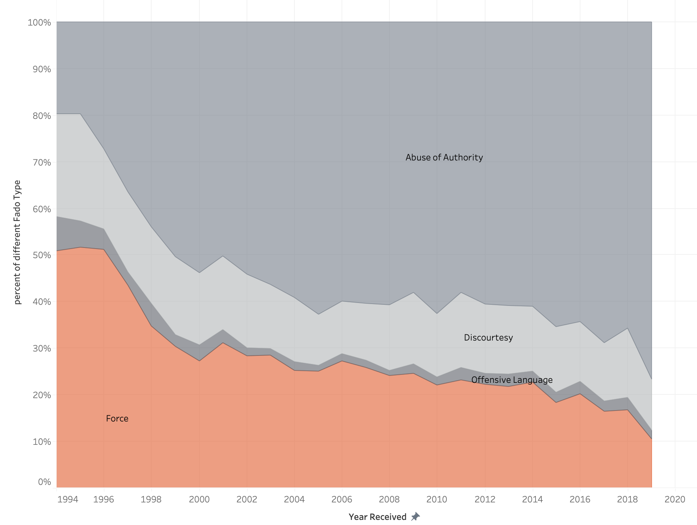
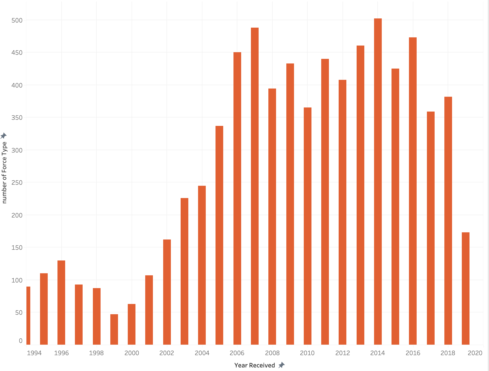

Proposition: Police use of force became less of a concern between 1995 and 2019.
FOR the Proposition

Design Decisions and Rationale:
- Limited the time range to 1995–2019 (Score: +0.5). I excluded 2020 because the dataset ends partway through that year, so its counts would show a misleading drop. I also removed years before 1995 because they contain very few cases, so a handful of complaints could swing the percentages sharply and distract from the overall trend. Restricting the range makes every year shown reliable. However, starting in 1995 also begins the chart near force’s peak share (about 50%), which makes the later decline look as large as possible.
- Percentages instead of counts (Score: −1). I calculated force allegations as a percentage of all allegations within each year. This highlights their declining share and suggests improvement, but it can mislead readers into assuming that the number of force allegations also declined.
- Orange emphasis with gray context (Score: +1.5). I highlighted force allegations in orange while showing the other categories in gray. This directs attention to force while preserving the context needed to understand the percentage.
- Stacked area chart with force at the bottom (Score: +1.5). Placing force along a consistent zero baseline makes its changing share easy to follow. The area chart emphasizes the broad trend, although individual yearly values are harder to compare than in a line chart.
- Framing through the caption (Score: −0.5). The caption emphasizes the shrinking share of force allegations, encouraging an interpretation of improvement. It accurately describes the measure, but gives less attention to the possibility that growth in other allegation categories explains the decline.
AGAINST the Proposition

Design Decisions and Rationale:
- Limited the time range to 1995–2019 (Score: +0.5). I excluded 2020 because the dataset ends partway through that year, so its counts would show a misleading drop. I also removed years before 1995 because they contain very few cases, so a handful of complaints could swing the percentages sharply and distract from the overall trend. Restricting the range makes every year shown reliable. However, starting in 1995 also begins the chart near force’s peak share (about 50%), which makes the later decline look as large as possible.
- Counts instead of percentages (Score: +1). I displayed annual counts to reveal the volume hidden by the percentage chart. This challenges the impression of improvement, although counts alone do not account for changes in reporting or the number of police–public encounters.
- Bars with a zero baseline (Score: +2). I used bars beginning at zero so their heights represent counts proportionally. This makes differences between years easy to compare without exaggerating them through a truncated axis.
- Displaying only force allegations (Score: +1.5). I removed the other allegation categories to focus directly on force. This makes the yearly counts clearer, although it leaves out the broader complaint composition shown in Figure 1.
- Emphasizing the overall increase (Score: −0.5). The tittle directs readers toward the contrast between the early and later years. However, it simplifies a fluctuating pattern that also includes declines after peaks and a sharp drop in the final year.
Final Reflection
Creating these visualizations showed me how the choice of measure can change the story readers take away from the same data. The percentage chart suggests improvement because force allegations occupy a shrinking share of all allegations. The count chart challenges that impression because later years generally contain more force allegations than earlier years. These patterns can coexist: a category’s percentage can decline while its count increases if the total grows faster.
The most difficult part was deciding what “less of a concern” means. A smaller share of force allegations may suggest improvement, but higher allegation counts can suggest that force remains a significant concern. Color and chart layout helped communicate each argument, but the choice between percentages and counts had the strongest effect. Comparing the charts made clear how an accurate calculation can still support an incomplete interpretation.
I define ethical visualization as presenting accurate values while making the measure, scope, and limitations understandable. Highlighting a category or choosing a clear chart type is acceptable persuasion when readers can understand what is being shown. It becomes misleading when the presentation encourages conclusions the data cannot support, such as treating a smaller percentage as proof of fewer incidents. A fuller assessment would show both counts and percentages, explain the dataset’s coverage, and distinguish allegations from confirmed events.